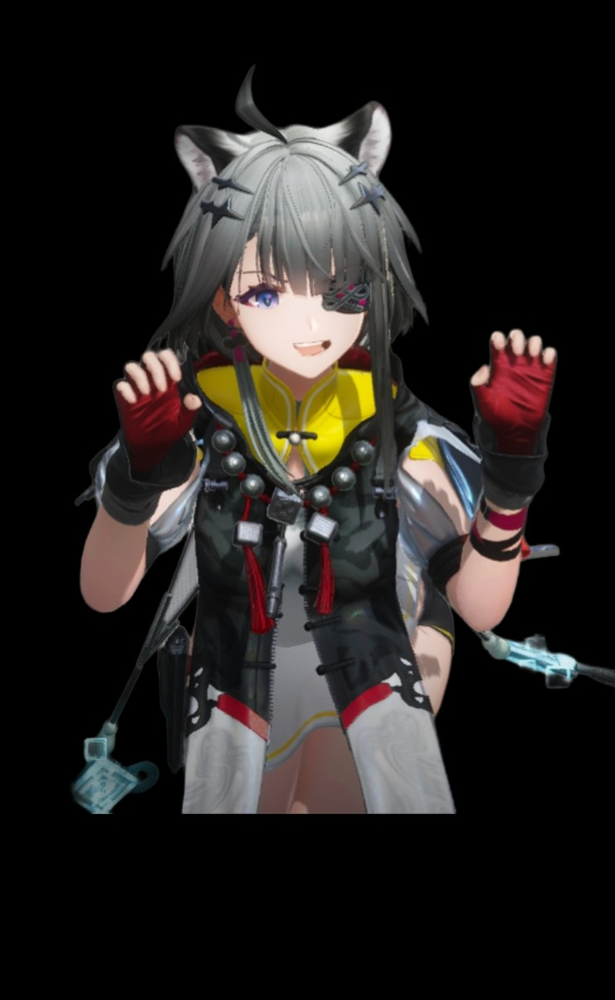

エンドフィールド名刺
最推し：タンタン
まだまだこれから探索頑張ります🔥


Recording
Studio Session / Editorial Balance
大きい画像と小さい画像を同居させて、均一ではないリズムを作ります。これが“適当な並び”と“デザインされた配置”の差になります。
Mix & Mastering
Asymmetrical Layout / Direction
左右を毎回変えることで単調さを防ぎ、スクロールした時の気持ちよさを作ります。参考サイトの“流れが変わる感じ”に寄せた部分です。


Visual Direction
Full-Bleed / Split / Mosaic
最後は情報量を少し増やして締めています。参考サイトの一覧ページのように、ただ同じ箱を並べるのではなく、面の変化で見せる設計です。